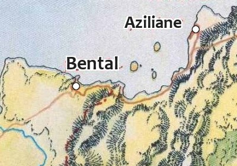

Bental, la cité des voleurs
Bental est une ville modeste exempte de fortifications et construite de bric et de broc, proche de la frontière de la province des jardins de Jadhys. Les bâtiments de pierres sont peu nombreux, les ruelles boueuses et tortueuses, les constructions décrépites et branlantes, la population peu aimable. Les débits de boissons sont nombreux pour une ville aussi petite, mais c'est là où se font les affaires... On compte aussi deux ou trois bordels permanents et un temple de Tous les Dieux. La plupart des constructions sont donc en bois, à colombage, et ont la particularité de brûler ou bien de s'effondrer avec une régularité alarmante. Les plus pauvres résident dans de simples cabanes ou tentes de mauvaise qualité, rêvant de pouvoir accéder un jour à un vrai logement.
Les habitants
Bental compte quelques 3300 habitants. Officiellement, les gens du cru vivent de la pêche, mais il n'y a que les pieds-tendres pour le croire ! En fait, les habitants cumulent souvent plusieurs occupations comme la contrebande, le vol, l'assassinat, et parfois la piraterie. On trouve en effet à Bental tous les rejetés et les exclus de Laelith, les marginaux, les prêtres hérétiques, les malades, les hors-la-loi, les voleurs recherchés, bref toutes les personnes de la région qui veulent se faire oublier quelques temps. Toute cette faune réunie en une seule ville fait de Bental la cité la plus dangereuse de la région. On n'y aime pas les étrangers, surtout ceux qui posent trop de questions, et le mensonge est un peu une sorte de sport local. La violence est partout tangible, dans les actes comme dans les paroles, mais semble connaître son paroxysme quand vient la nuit. Tout le monde est plus ou moins ostensiblement armé, même les femmes et les enfants, et l'on y braille plus qu'on y parle, même pour se dire bonjour. Beuveries bruyantes, rixes d'ivrognes et traquenards sont monnaie courante. Gare aux coins sombres et aux chutes malencontreuses...
Organisation
La ville est « gérée » par un conseil des Marchands composé de notables locaux ayant pignon sur ruelle. En fait, ce sont les trois principales familles mafieuses du coin (les Rikor, les Sandoval et les Olamson) qui tirent les ficelles via ce conseil fantoche. Coups bas, trahisons, corruption et mauvaise foi sont le credo de ces pseudo autorités.
Toutefois, afin de ne pas sombrer dans un chaos total qui serait néfaste aux juteuses affaires du conseil, celui-ci a mis en place une milice composée d'une cinquantaine de soudards commandés par le connétable Vulgor, lui-même secondé par le sergent elfe Linthael et le sergent nain Korlac. Ce ne sont en fait ni plus ni moins que des hommes de mains, leur rôle n'étant pas de faire régner l'ordre dans la cité ni même de faire respecter la loi, mais seulement de protéger les intérêts des membres du conseil. Mais comme de nombreux bâtiments leur appartiennent, on a l'impression que la milice surveille toute la ville. Les miliciens sont équipés d'armure de cuir et de solides gourdins, et patrouillent dans la ville par groupe de 3 ou 4. Ils ont une forte propension à la violence gratuite et à la lâcheté chronique. On peut néanmoins acheter facilement leur silence avec de l'argent, des filles ou de la boisson. La mortalité importante, qui permet de renouveler fréquemment les effectifs du rang, s'explique par le fait que les miliciens n'hésitent pas à s'entre-tuer si cela leur est profitable.
La justice à Bental est sommaire et fonctionne sur le principe du « pas vu, pas pris » et de « j'ai de l'argent, donc j'achète mon innocence ». Tout le monde y trouvant visiblement son compte, personne ne pense à changer la donne. En cas d'arrestation, la condamnation varie donc grandement en fonction des moyens des prévenus. Les délits mineurs sont parfois punis publiquement d'une simple bastonnade ou d'une exécution en bonne et due forme par Travel le Tourmenteur, tandis que des délits graves peuvent ne donner lieu qu'à une amende symbolique ou une réprimande de pure forme. La prison, qui sert aussi de quartier à la milice, est un lieu où il ne fait vraiment pas bon croupir. Non seulement on vous vole ce que vous avez, mais vous y êtes dévoré par la vermine et vous y subissez les violences de miliciens continuellement ivres.
La cité a également armé deux voiliers rapides qui servent officiellement à des patrouilles côtières, mais tous les habitués du coin savent bien qu'ils sont utilisés pour des actes de piraterie et pour la contrebande avec la cité sainte ou les autres villes côtières. Le capitaine Terjon Mollandyn (un magicien) commande la « Lamproie », tandis que la capitaine Sybellia la Rouque commande la « Flèche de Bental ». Tous les deux, anciens amants, sont maintenant rivaux dans la course au pouvoir, se haïssent cordialement, et ne perdent jamais une occasion de se faire des crasses.
Bental et Laelith
L'ASSURANCE DE LA HAUTE GUILDE
Une autre raison pour laquelle Laelith n'intervient pas sur la cas Bental est que les grandes familles mafieuses de la cité des voleurs ont des contacts directs avec la Haute Guilde de la cité sainte. Des accords secrets existent à propos de la piraterie et de la contrebande en provenance de Bental.
L'assurance que propose la Haute Guilde est au coeur de cette affaire, car le danger que représente Bental pour les commerçants incitent ces derniers à souscrire cette assurance. Et Bental est particulièrement impliqué dans les attaques de navires et de caravanes qui n'ont pas voulu accepter l'offre de la Haute Guilde.
Pourquoi le royaume n'intervient pas ? On peut trouver plusieurs explications à cela. La plus évidente est que Laelith ne s'occupe principalement que de ce qui se passe dans ses murs. Les provinces ont acquis un niveau d'indépendance élevé, et il est du ressort de chaque province de fixer ses lois et de les faire appliquer. Tant que ce qui se passe dans une province n'a pas de répercussion sur la cité sainte, que ce soit sur le plan économique, politique ou de la sécurité, Laelith laisse faire.
Concernant le cas spécifique de Bental, la cité sainte est bien trop préoccupée par ses propres problèmes de criminalité pour devoir en plus assumer ceux de Bental. De plus, la cité des voleurs sert en quelques sortes de soupapes pour Laelith, qui préfère voir les criminels s'exiler là-bas plutôt que de rester en son sein, et la proximité de Bental offre une bonne opportunité pour cela. Les autorités ont donc intérêt à ce que Bental continue d'exister, car avec ou sans elle il y aura toujours de la criminalité de toute façon, alors si elle doit exister, meilleur que ce soit loin des pèlerins. Certes les attaques des navires pirates gênent le commerce du lac, mais elles participent aussi à motiver les commerçants à demander la protection des soldats, service que Laelith n'offre pas gratuitement. De leur côté, les familles mafieuses de Bental sont parfaitement conscientes de la situation, et font extrêmement attention de ne pas franchir les limites implicites qui obligeraient Laelith à intervenir.
La ville
Illustration originale de Mike Schley
1. Auberge de l'Ancre. C'est l'un des rares bâtiments de la ville à posséder un étage. On y trouve une dizaine de chambres individuelles, cinq chambres doubles et un grand dortoir commun. C'est également le seul endroit de la ville où les jeux d'argents sont interdits et où l'on peut laisser ses affaires sans craindre les voleurs. Les prostituées y sont aussi interdites, ainsi que la violence. La salle commune est vaste, mais on peut s'isoler dans des petits salons attenants pour parler affaires. Tout le monde considère l'endroit comme une zone neutre. L'établissement est tenu par Jonas le Bossu, un des seuls braves et honnêtes hommes de la ville. Il est secondé dans sa tâche par son neveu Jason et par un personnel composé principalement de halfelins.
2. La maison des Senteurs. Une petite maison sympathique tenue par une bonne grand-mère halfeline, la Margotte, et son neveu, Séraphin Loupiot. Herboriste de renom, elle arrondit ses fins de mois en louant une petite pièce à ceux qui veulent oublier le monde présent dans les volutes entêtantes des drogues les plus étranges qui soient. La pièce peut accueillir jusqu'à quatre personnes qui s'allongent sur de moelleux coussins. La vieille dame n'accepte pas n'importe qui chez elle, et les individus sans éducation sont priés de passer leur chemin au plus vite. En cas de refus, son neveu se fait un devoir d'utiliser sa sarbacane aux dards enduits d'un poison très violent.
Halder Sandoval
3. Demeure des Sandoval. Le clan dirigé par Halder Sandoval est le second en puissance de la cité, après le clan Rikor. La demeure se compose de plusieurs bâtiments, mais aucune fenêtre ne s'ouvre vers l'extérieur, toutes donnent sur la petite cour intérieure. Halder a une tendance à la paranoïa assez poussée ! Pour sa sécurité, il fait appel aux services de mercenaires nains venus de la cité sainte. Quand ils sortent de la demeure, ils patrouillent toujours par trois et personne n'irait leur demander quoi que ce soit.
4. Le Dé Pipé. Une taverne sordide tenue par un rat-garou nommé le Rouquemout et son acolyte gnome le bien nommé Gros Tarin, qui reçoit les rats-garous de passage. L'endroit abrite un passage secret conduisant dans les profondeurs de la ville, un ancien donjon qui s'étale sur plusieurs niveaux.
5. Halle des Marchands. Un lieu qui fonctionne à toute heure du jour et de la nuit. Tout s'achète et s'y vend dans la plus stricte légalité de la Charte des Marchands. On peut y trouver de la drogue, des esclaves et des produits aussi étranges qu'exotiques. Un groupe de 5 ou 6 miliciens y patrouille fréquemment pour décourager les vols. Des agents des différentes organisations mafieuses y sévissent également, déguisés, espionnant les groupes adverses. Le Conseil des Marchands prélève 20% sur toutes les transactions.
6. La Lanterne Rouge. C'est le claque (bordel) le plus classe de la cité. Il est tenu par Dame Mahaut, une ancienne courtisane répudiée qui a connu ses heures de gloire dans les bas-fonds de la cité sainte. Les pensionnaires sont peu nombreuses, mais jolies, saines et parfois cultivées. Ce bordel n'est d'ailleurs ouvert qu'à une clientèle triée sur le volet ; rien à voir avec les autres bordels sordides de la cité. Des eunuques venus du lointain désert de l'ouest s'occupe de la protection des lieux, et la menace de leurs impressionnants yatagans suffit généralement à désamorcer les conflits.
7. Les quais. L'effervescence qui règne sur les quais de Bental n'a rien à envier à la cité sainte si l'on tient compte des proportions de chacune des villes. La pêche en est une des activités les plus visibles, et on peut y trouver quelques pêcheurs honnêtes. Mais la piraterie et la contrebande restent dominantes et, contrairement à Laelith, se pratiquent à la vue et au su de tous. La main d'œuvre nécessaire à ces activités est dirigée essentiellement par une compagnie d'elfes de Sylfe qui a ainsi trouvé le moyen de se faire accepter par les pirates. Il faut dire que le réseau de renseignements mis en place par les elfes, et particulièrement par leur chef Felienen Halister (voir ci-dessous), est très efficace ; les indications qu'ils fournissent sont particulièrement fiables !
Felienen Halister
8. Le Bois de Corellon Larethian. C'est ici que Felienen Halister et ses compagnons les plus proches ont installé leur campement. Tous les matins, par petits groupes, les elfes prennent la direction des quais pour aider et encadrer les équipes de dockers. Rares sont les marins qui refusent cette main d'œuvre, car il semble en effet que Felienen soit très bien informé et connaisse avant tout le monde le volume des marchandises qu'il faudra rapidement débarquer de chaque navire. Et si Felienen a choisi ce bosquet, ce n'est pas uniquement par respect pour la divinité elfique. Chassé de Sylfe après une sombre histoire de lutte de pouvoir au sein de la province elfique d'Egonzasthan, l'elfe a en effet découvert au centre du petit bois, caché par la végétation, un labyrinthe magique qui, si on le suit correctement, mène à un portail qui conduit directement vers son double, en plein jardin du dénuement, au cœur de Laelith. Les deux labyrinthes sont si ressemblants que le passage de l'un à l'autre se fait de manière quasiment imperceptible. Ce chemin, Felienen l'emprunte régulièrement, car s'il connait si bien les allers et venues des navires sur le lac, c'est parce que c'est lui qui sert d'intermédiaire entre les pirates de Bental et la Haute Guilde de la cité sainte, cette dernière lui indiquant les navires qui n'ont pas voulu souscrire à l'assurance.
9. À la Trousse-Pinette. Une boutique qui fait le commerce d'un petit vin d'épines appelé la Trousse-Pinette. Elle est tenue par un certain Chris le Renard, un commerçant agramorien exilé. La rumeur dit qu'il fut l'empoisonneur attitré d'un noble puissant, mais qu'il perdit sa patente pour une sombre affaire de jalousie d'un concurrent déloyal. Personne ne sait ce qu'il met dans son petit vin, mais il a des effets bizarres sur tous ceux qui en consomment : euphorie, décuplement des prouesses sexuelles, accélération des mouvements et parfois... mort instantanée. Il y a toujours foule dans son échoppe pour déguster et acheter son breuvage. C'est la boisson de prédilection des décadents de tous poils, qui viennent de loin pour tester cette étrange boisson.
10. Demeure des Rikor. Le clan de Seth Rikor est le plus influent de la cité, il est donc normal que sa demeure respire le luxe. Deux puissants guerriers (des barbares) montent la garde devant l'entrée principale à toute heure du jour ou de la nuit. Une dizaine d'autres sont stationnés en permanence dans la maison, où ils patrouillent. Seth sort rarement de son bureau, d'où il supervise toutes ses affaires, et délègue ses responsabilités à de nombreux lieutenants.
11. Maison du Conseil des Marchands. Ce luxueux bâtiment de deux étages abrite les instances politiques de la cité, le tribunal et les archives de la cité (principalement des livres de compte). Une dizaine de scribes s'y agitent pendant les heures d'ouverture, durant lesquelles au moins un représentant du conseil est toujours présent pour s'occuper des affaires courantes. On peut acheter ses services avec un généreux pot-de-vin.
12. Temple de Tous les Dieux. Ce grand bâtiment de bois abrite des dizaines de petites alcôves qui permettent l'adoration des divinités les plus communes dans les provinces. Il n'y a pas de clergé présent, mais le temple reste ouvert en permanence pour les croyants. Il est interdit, par décret, d'y répandre le sang, d'y faire commerce ou d'y exercer des activités illégales. Personne n'oserait en effet contrevenir à ces règles simples par peur de la vengeance des dieux... et de la garde...
13. Cimetière. Ce lieu est particulièrement agréable, les allées sont soigneusement bordées et la pierre des caveaux nettoyés de toute herbes sauvages. On y retrouve quelques tombes de pirates qui firent la renommée de Bental. Mais l'attrait principal de ce cimetière est invisible au promeneur oisif. Ses allées cachent en effet un véritable petit trésor autour de la tombe d'un mage ancien : une fleur très rare qui donne le pollen d'agremancie.
Gritt Beld
14. Maison du fossoyeur. Cette petite baraque encombrée d'outils de jardin abrite un sombre personnage à la mauvaise réputation. Gritt Beld est d'abord impressionnant par sa taille de plus de deux mètres, en totale contradiction avec sa grande maigreur. Mais son œil de verre et sa mine sinistre cachent un être plus doux qu'il n'y parait. Prévenant auprès des familles endeuillées, il est respecté pour le sérieux de son travail. Avec lui les offices sont rondement menés et les tombes entretenues avec soin. Mais outre les mises en terre, ce qui fait la fortune du fossoyeur ne sont pas les classiques poudres d'os, lambeaux de chairs et autres fioles de sang qui servent de composantes à de nombreux sorts de nécromancie, c'est le pollen d'agremancie qui remplace les diamants nécessaires aux sorts de réanimation, de résurrection ou de rappel à la vie, et que Gritt revend pour un tiers de la valeur des diamants nécessaires. Il compte ainsi parmi ses clients de nombreux magiciens des Pics des Mages et clercs du temple du Crâne de la cité sainte, qu'il reçoit régulièrement, mais toujours de manières discrètes, la nuit. Au fil des ans, Gritt a ainsi amassé un joli petit magot, mais son amour pour son cimetière est tel qu'il lui est impossible d'envisager d'en partir. C'est ici qu'il a vécu ses années les plus heureuses et c'est ici qu'il veut demeurer, à tout jamais.
15. Le Pirate Muet. La taverne la plus agitée de la ville, un lieu tenu par un ancien pirate nommé le Troussequin. Le nom de la taverne vient du fait que le patron a eu la langue coupée quand il était encore en activité, mais personne ne sait comment cela est arrivé et, à vrai dire, personne ne songe plus à savoir pourquoi. Quoiqu'il en soit, le patron communique avec ses clients par télépathie, ce qui n'est pas la chose la plus rassurante du monde. C'est dans cet endroit bruyant que se retrouvent les plus infâmes pirates des deux lacs lorsqu'ils font relâche à Bental. Ils peuvent y engager de nouvelles recrues, passer des pactes éphémères entre eux ou s'y étriper joyeusement, tout cela sous l'œil goguenard du patron.
Dadgar Olamson
16. Demeure des Olamson. Le clan des Olamson est donc le troisième par ordre d'importance de la ville. Une situation que son chef, Dadgar Olamson, espère bien voir changer rapidement. S'il joue parfaitement son rôle dans la gestion de la communauté, reconnaissant en apparence la supériorité des deux autres familles, il est à l’affût du moindre événement qui pourrait, par inadvertance, amener un quelconque déséquilibre en sa faveur. Jaloux, retors et prêt à tous les coups fourrés, il use en secret de tous les moyens pour provoquer le destin qui, il en est persuadé, est le sien : devenir le maître de Bental et mettre en coupe tous ces manants de Rikor et de Sandoval. Son objectif pour cette année est de se positionner sur le trafic lacustre, car pour le moment il ne s'occupe que des caravanes sur terre.
17. Prison/Quartier de la milice. Cet infâme bâtiment de pierre sombre et au toit en terrasse ne possède aucune fenêtre, juste des meurtrières pour apporter un peu de lumière. On y accède par une unique grande double porte renforcée de métal. Pendant les heures du jour, un groupe de miliciens s'y tient, s'occupant de surveiller les allées et venues. La prison s'étend sur plusieurs niveaux en dessous du sol et la rumeur dit qu'elle a été bâtie sur les ruines d'un ancien donjon de mauvaise réputation. Le tourmenteur municipal y réside, ne sortant que pour procéder aux exécutions capitales. L'endroit a déjà servi de forteresse en temps de troubles et une poignée d'hommes peut y soutenir un siège pendant des semaines.
Écrit par Bredon, TomLG et blueace